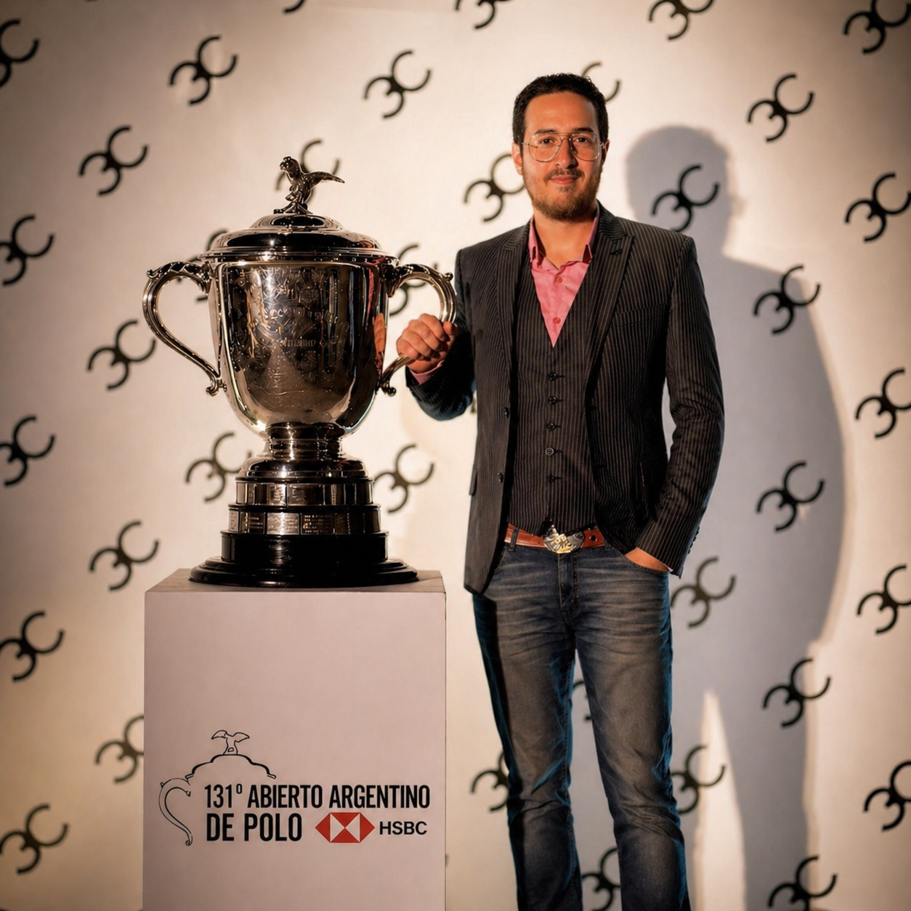
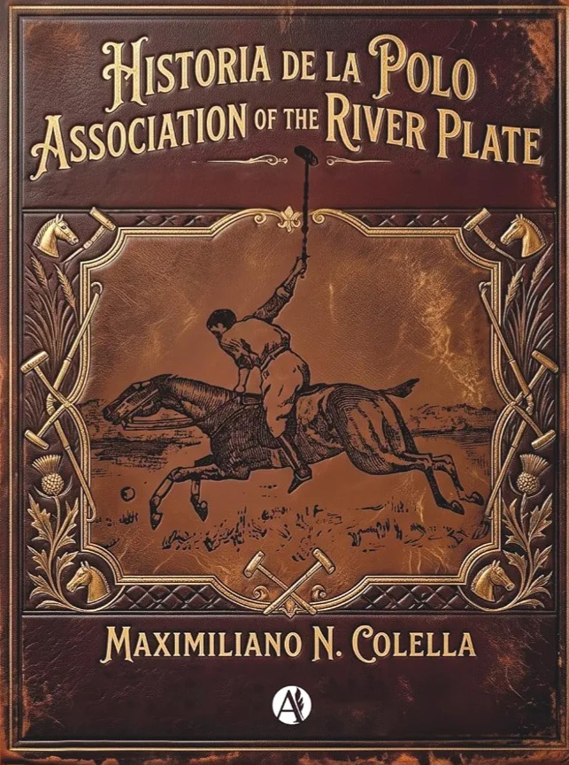

Orígenes del polo en la Argentina
Primeras prácticas, introductores, escenarios y testimonios documentales.
INVESTIGACIÓN · HISTORIA · POLO
Maximiliano N. Colella
Investigador e historiador del polo argentino. Escritor y divulgador.
Un espacio dedicado a investigar, documentar y difundir la historia del polo argentino: sus orígenes, sus instituciones, sus primeros clubes y los protagonistas que dieron forma a este deporte.

EL PROPÓSITO
Investigar el pasado para comprender la formación de una tradición.
La historia del polo se construye a partir de documentos, testimonios, publicaciones de época y referencias que permitan reconstruir los hechos con precisión.
01 / PERFIL
Maximiliano N. Colella, investigador e historiador del polo argentino, coleccionista, escritor y divulgador.
MAXIMILIANO N. COLELLA (1983) es un apasionado coleccionista e investigador argentino, especializado en los orígenes y la evolución del polo a nivel global y regional. Orgulloso colaborador de la Subcomisión de Historia y Estadísticas de la AAP, ha dedicado años a la investigación documental para rescatar el legado de las instituciones pioneras del deporte en el Río de la Plata.
Actualmente, compagina su actividad profesional como director comercial con la escritura de obras que buscan desentrañar la rica herencia cultural del polo, desde sus raíces ancestrales hasta su consolidación institucional en Sudamérica.
La biografía ampliada y los antecedentes profesionales se incorporarán más adelante.
Consultar perfil del investigador →02 / LÍNEAS DE TRABAJO
Áreas de estudio y reconstrucción histórica.
Primeras prácticas, introductores, escenarios y testimonios documentales.
Fundación, actividad y desarrollo de las primeras instituciones y agrupaciones.
Asociaciones, reglamentos, organización y consolidación del deporte.
Biografías, trayectorias y vínculos de quienes participaron en el desarrollo del polo.
Partidos, torneos, resultados y transformaciones del juego a través del tiempo.
Prensa histórica, archivos, publicaciones, fotografías y registros de época.
Las líneas temáticas describen áreas de investigación; no constituyen por sí mismas afirmaciones sobre hallazgos específicos.
03 / OBRA PUBLICADA

PUBLICACIÓN · 2026LIBRO
Una investigación dedicada a la historia de la Polo Association of the River Plate y a la documentación de sus antecedentes institucionales.
Consultar disponibilidad
Los enlaces directos de compra pertenecen a las URL oficiales de cada plataforma.
04 / CONOCIMIENTO DOCUMENTAL
Un espacio para compartir fuentes, análisis y hallazgos históricos.
En esta sección se publicarán artículos, transcripciones documentales, referencias bibliográficas y notas de investigación.
05 / DIFUSIÓN
Entrevistas, reseñas y menciones en medios.
Esta sección se actualizará con referencias, enlaces y fechas de publicación.06 / CONTACTO
Para consultas académicas, periodísticas, editoriales o vinculadas con investigaciones históricas.
Contacto profesional
El canal de contacto directo se habilitará próximamente.
Mail ↗IG: @camisetasdepolo